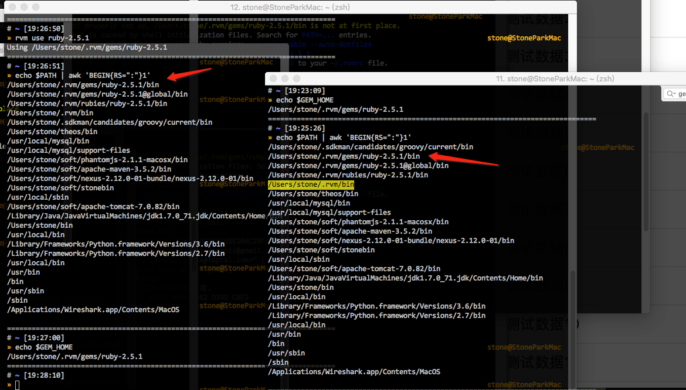
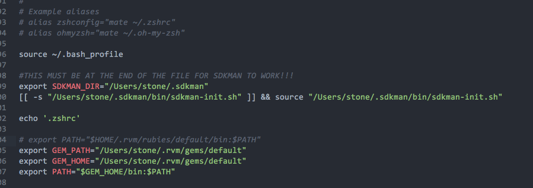
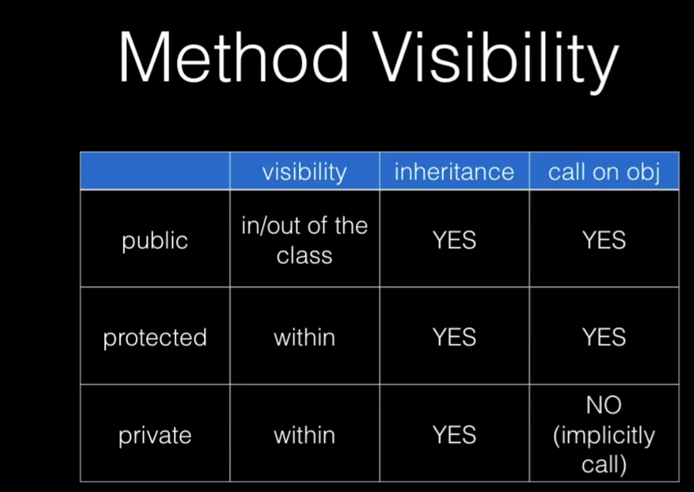

@(工作笔记)
ruby-record
[TOC]
p 'hello world'
sed替换整行
rails new $1 --skip-bundle
filepath="$1/Gemfile"
sed -i "" "1s/^.*$/source 'https:\/\/gems.ruby-china.com\/'/g" $filepath
rvm complain of "PATH is not properly set up"
Removing rvm PATH line from /Users/stone/.mkshrc.
Adding rvm PATH line to /Users/stone/.profile /Users/stone/.mkshrc /Users/stone/.bashrc /Users/stone/.zshrc.
Adding rvm loading line to /Users/stone/.profile /Users/stone/.bash_profile /Users/stone/.zlogin.
/Users/stone/.mkshrc
/Users/stone/.profile
/Users/stone/.mkshrc
/Users/stone/.bashrc
/Users/stone/.zshrc
/Users/stone/.profile
/Users/stone/.bash_profile
/Users/stone/.zlogin
Warning! PATH is not properly set up, /Users/stone/.rvm/gems/ruby-2.5.1/bin is not at first place.
https://qiita.com/900090009/items/779dd0b5317e24939489
恶心的警告  只要 .rvm/gems 不再第一个 就抱警告, 因此改写.zshrc  搞定
ruby 继承关系

ruby 中类变量是不好的做法
https://stackoverflow.com/questions/10594444/class-variables-in-ruby
从来没有真正需要类变量。但原因并不是他们是共享国家。我的意思是，尽可能避免共享状态是好的，但这不是真正的问题。
他们被推荐反对的原因是，正如那篇文章所示，他们真的很混乱。特别是，类的类变量由其子类和子类的实例共享。例如：
class Parent
end
class Child1 < Parent
@@class_var = "Child1's"
end
class Child2 < Parent
@@class_var = "Child2's"
end
使用此代码，Child1及其实例将全部看到以@@class_var值"Child1's"和Child2 命名的类变量，并且其实例将全部看到@@class_var以该值命名的类变量"Child2's"。但是假设稍后我们重新打开Parent并写下这个：
class Parent
@@class_var = "Parent's"
end
现在，Parent及其创建的实例将全部看到@@class_var以该值命名的类变量"Parent's"。但这不是全部。既然父类有这个变量，Child1和Child2突然共享变量，所以所有的@@class_vars都有值"Parent's"。如果你在Child1中重新分配变量，它仍然是共享的，所以所有类都会更新。多么令人困惑！
您可以只使用类的实例变量而不是类变量，如下所示：
class Parent
@class_var = "Parent's"
def self.class_var
@class_var
end
end
class Child1 < Parent
@class_var = "Child1's"
end
class Child2 < Parent
@class_var = "Child2's"
end
现在，Parent.class_var将返回“Parent's”，Child1.class_var将返回“Child1's”并Child2.class_var返回“Child2's” - 就像您期望的那样。
@@ 类变量
https://stackoverflow.com/questions/5890118/what-does-variable-mean-in-ruby/5890234 https://stackoverflow.com/questions/2505067/class-self-idiom-in-ruby
ruby-on-rails - 在 Rails 中，为了便于调试，如何打印对象的内容？
https://ask.helplib.com/ruby-on-rails/post_747804
Ruby 2.3 new feature 之一: 多行字符串更优美的写法
https://ruby-china.org/topics/28501
ruby log
https://stackoverflow.com/questions/19507477/how-to-get-current-file-and-line-number-in-ruby
ruby IDE apache velocity 制作模板 转意 $ 方法
One of the way is to use a fixed string variable i.e, setting a variable for the $ sign and then using it.
#set ( $d = "$")
xyz ${d}${d}foo
It gives the expected output
xyz $$foo